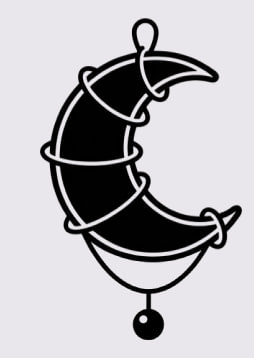
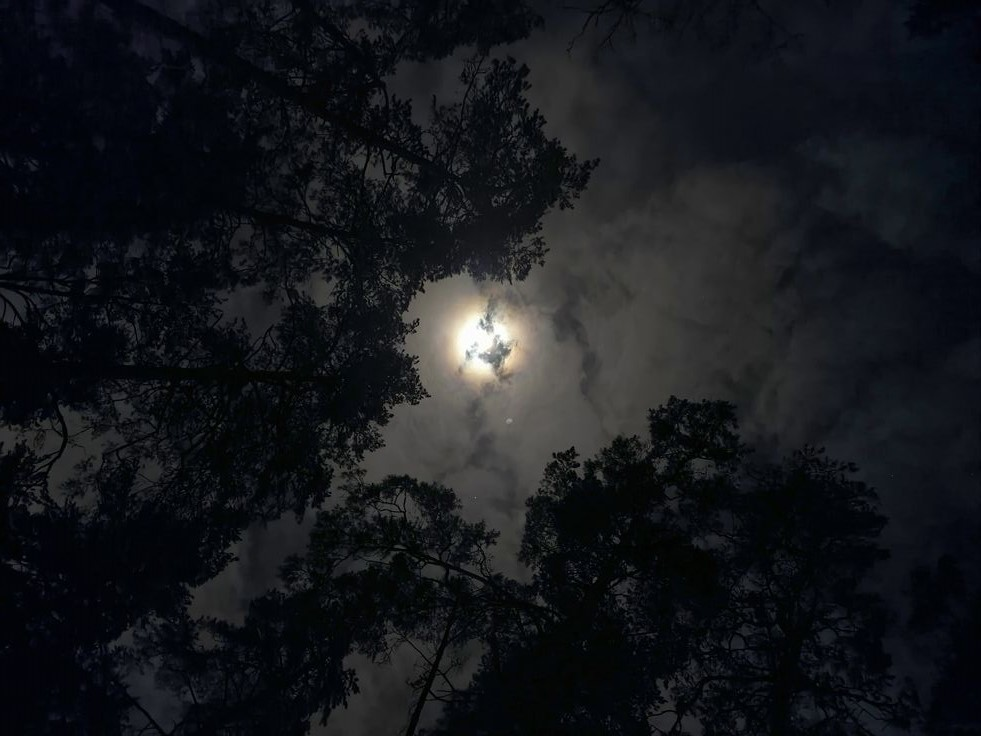
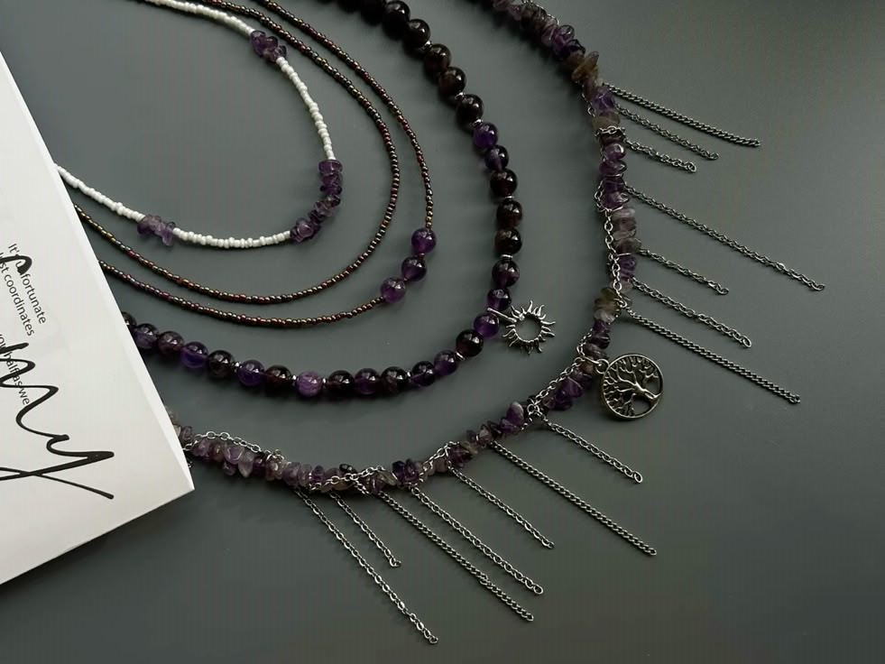
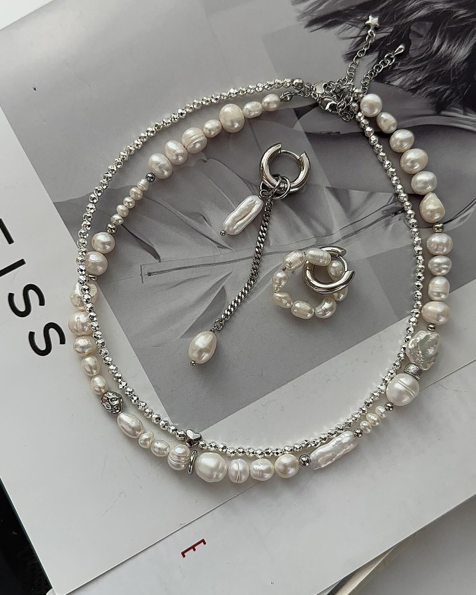

Lune — это небольшая мастерская украшений, в которой каждая деталь создаётся вручную с особым вниманием к форме, материалам и смыслу. В основе бренда лежит идея: украшение — это не просто аксессуар, а продолжение внутреннего состояния человека. .


Lune — это небольшая мастерская украшений, в которой каждая деталь создаётся вручную с особым вниманием к форме, материалам и смыслу. В основе бренда лежит идея: украшение — это не просто аксессуар, а продолжение внутреннего состояния человека. .


Мастерицы Lune — это девушки, увлечённые своим делом, которые работают с натуральными камнями, металлом и текстурами, сочетая эстетику и символизм. Каждое изделие проходит через несколько этапов: от подбора камня до финальной сборки, и на каждом этапе в него вкладывается не только труд, но и чувство. Работа с украшениями для них — это почти медитативный процесс. Они подбирают камни не только по внешнему виду, но и по их энергетике, оттенкам, сочетанию с металлом.